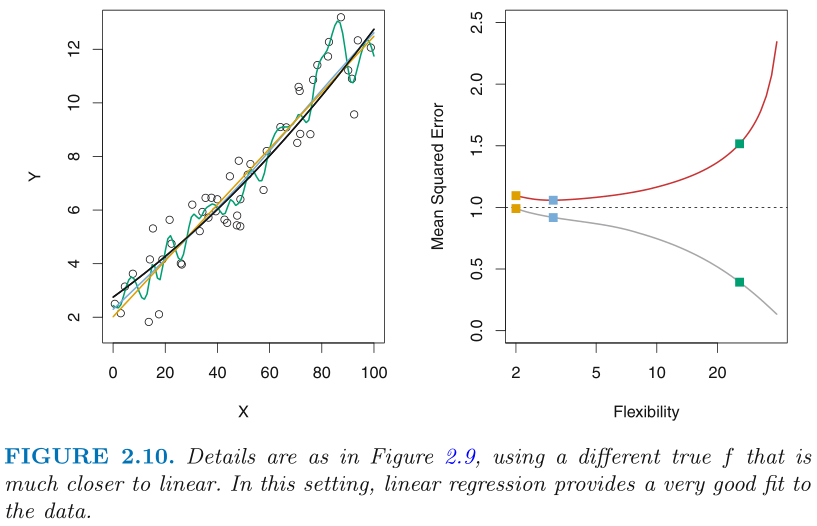

总体上，使用可获得的数据构建机器学习模型，是为了对现有数据进行分析，或在新的输入下做出预测。
数据
数据集可划分为训练集、验证集和测试集，分别用以训练、选择和评估机器学习模型。
模型
我们希望模型的预测值尽量接近真实值。为了衡量模型的优劣，构造评价指标，对预测值和真实值的接近程度进行量化。以回归问题为例，最常用的评价指标为均方误差：MSE (Mean Square Error)，包括：
- 训练均方误差：training MSE
- 测试均方误差：test MSE
最终目标是让测试误差小。
数据与模型

当数据固定：
随模型复杂度提高，其拟合能力增强（单独看待图2.9、2.10和2.11的左图），training MSE下降，test MSE先下降后升高；模型复杂度过高时，发生过拟合（单独看待图2.9、2.10和2.11的右图）。当模型固定：
在不同数据集上，取得最小的test MSE时对应的模型复杂度很有可能不同，且差异较大（对图2.9、2.10和2.11的右图进行竖向比较）。
参考资料
[1] 李航著. 统计学习方法 第2版[M]. 北京：清华大学出版社, 2019.05.
[2] James G, Witten D, Hastie T, et al. An introduction to statistical learning[M]. New York: springer, 2013.